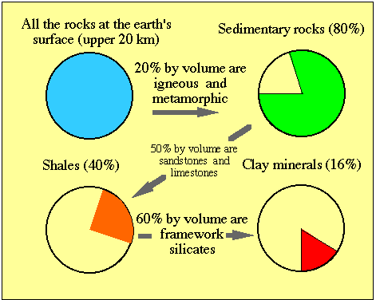
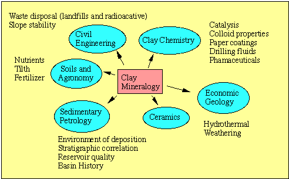

Clay mineralogy is the study of clays and clay minerals.
WHAT IS CLAY AND
WHAT IS A CLAY MINERAL?
The term clay is often operationally defined. The term clay denotes both (1) a particle size range and (2) a set of material physical properties. The upper limit for the clay particle size range varies depending upon the discipline that is operationally using the term (e.g., geology, engineering, soil science). In geology, the term clay includes all particles that are ≤2 μm (recall: 1 μm or micron = 10-6 meter), which is about the size of a Prokaryotic cell or 1/100 of a human hair, or the wavelength of infrared radiation). Sometimes the limit is reported at ≤4 μm (such as the engineering field). When the term "clay sized" particles is used, there is no connotation about composition. Clay sized material can constitute any material as long as it's within the particle size range of <2 μm. Bruce Railsback has produced a nice figure that depicts the "size of things".
The Clay Minerals
Society produces a glossary of clay terms, which is
a good source to go to for many words used in clay science.
The operational
definition of clay also includes rheological properties (i.e.,
plasticity). Clay is often described as a fine grain material
that is plastic when wet and hardens when dries. There is
nothing inherent about composition in the term clay, although
clay is often composed of clay minerals (see more below).
Be careful of the following caveat when you
hear the term "<2 μm". Many times in clay mineralogy,
people will talk about "the clay fraction" as being equivalent
to the <2 μm fraction. What is meant by this expression is
that the material has an "equivalent spherical diameter" or esd of <2 μm. This is
an operational definition based on Stokes' Law, which
describes the terminal velocity or rate of particle movement
in a fluid, for a given set of physical conditions. The
terminal velocity for a <2 μm particle in water can be
extremely slow, therefore its settling time in a normal
gravitation field can be extremely long (hours to days).
The time (tminutes) for an ideal spherical
particle was formulated by Folk (1974, ISBN
#0-914696-03-3) given the depth of settling in water (cm),
diameter (mm) of particle, and density of particle (g/cm3).
tminutes = depth (cm) / (1500 * A *
d2 (mm)
Where A is
a constant depending upon water viscosty, which is
temperature dependent (see below).
You can calculate and record the time (tminutes) for a 2 μm esd particle with a density of 2.65 g/cm3 to settle 10 cm in a graduated cylinder using the following equation.
tminutes = 10
cm / (A * 0.006)
where:
A = 3.23 if
suspension water temperature = 16°C
A = 3.57 if suspension water
temperature = 20°C
A = 3.93 if suspension water
temperature = 24°C
(interpolate A
as necessary).
You’ll find wait times
of ~7 hours. So plan accordingly!
tminutes: ______________
minutes;
thours
= tminutes/60 = _____________ hours
To speed things up, we resort to a centrifuge
to increase the forces involved. Stokes' formula is presented
in a usable form by Hathaway (1956) and is found below.
Hathaway, J.C. (1956) Procedure for
clay mineral analysis used in the sedimentary petrology
laboratory of the U.S. Geological Survey. Clay Minerals Bulletin,
3, 8-13.
Important
assumptions are made when a clay mineralogist reports <2 μm
esd. They include:
Colloids and
nanoparticles - Colloids and nanoparticles occur when material
becomes so small it can be considered a molecular aggregate.
The surface charges play an important role. Colloids are
operationally defined as fine material that stays in
suspension with its surrounding medium (solid, liquid or gas). As you will learn later on, for the
case of water solutions, the properties of a suspension are
dependent upon the concentrations and types of dissolved
ions in the solution. Since the mid-1990's the terms nanoparticle or nanocrystalline have come into popular use. These
terms denote particles that have crystalline order in the
nanometer size range (10-9 m). These materials
are commonly detected by electron optical methods and are
now routinely recognized with the advent of
second-generation electron microscopes.
Biochar is also an earth surface clay sized material
produced by natural and anthropogenic pyrolysis (burning) of
biomass. Biochar is found in many earth surface
environments.
Here is a brief comment about scale
and resolution (the profoundness of which, perhaps will only
be told by the test of time…). Many
advances
in science (hence civilization as we know it) have come
about by making better our ability to spatially resolve
(e.g., discovery of telescopes and optical microscopes). As
our ability to image and describe the order/disorder and
composition of materials across different scales improves,
then so will our understanding of materials improve. We are
just starting to understand the nature of the nanoscale. The
next step in resolution is seeing the world on the
picoscale.
Clay Minerals - The term clay mineral is most commonly used
to denote a family of hydrous alumino-silicates (more
specifically phyllosilicates). Most clay minerals are found in
nature with particle sizes in the <4 μm range. They are chemically and structurally
similar to other phyllosilicates, such as the true and brittle
micas. We will learn much about clay minerals from the
macroscopic study of true micas.
There are many other materials of geological and biological
importance that are clay sized, however they are not "clay
minerals" by the above definition. These other clay-sized
minerals and materials include other silicates such as quartz
and zeolites, as well as non-silicates such as the hydrous
sulfates, hydroxides, oxyhydroxides, hydrous oxides, amorphous
compounds, organic compounds, Prokaryotes, and viruses.
Because their existence is intimately associated with clay
minerals, they are included into the domain of clay
mineralogy. Here is a link to Bruce Railsback's page on "The
size of things"
I prefer not to get too anal about the above terms. If you ask
every clay mineralogist their definition of a clay and clay
mineral, then you'll likely get a different answer from each
person, each time. The philosophy here is to be inclusive of
all materials and strive to understand their fundamental
structure and chemical nature. The better you understand
minerals that are clay-size (which will be the subject of
everything that follows) then the better you can understand
their behavior in the environment.
Why are clay
minerals so important?
If we look at the volume of
material at the earth's surface we see that clay minerals
constitute about 16% of its total. A 20 km thickness is
considered the "surface" because it is the region from which
we extract natural resources (and dump our waste...). The
diagram below graphically explains how the value of 16% is
obtained.

If 20% of the upper 20 km rocks
on Earth are igneous and metamorphic, then that leaves 80% of
all upper rocks as sedimentary. If 50% of these sedimentary
rocks are sandstone and limestone by volume, then that leaves
40% of all upper rocks as shale. If 60% of these shales are
composed of framework silicates (quartz, feldspars, etc), then
that leaves the remaining clay minerals constituting 16% of
all surface rocks. Clay minerals are also abundant in soils and
hydrothermal alteration zones associated with igneous and
metamorphic rocks. This
analysis admittedly ignores organics and water, but the point
is that clay minerals are clearly a major component of the
Earth's surface.
Who studies clays?
The
field of clay mineralogy is truly a multi-disciplinary
science. If you were to attend a meeting
for
clay mineralogy, you are just as likely to encounter a
geologist as an engineer, a chemist, an agronomist, a
pharmacologist, a biochemist, a microbiologist, or
a material scientist. Anyone of these people would also
equally come from academic, industrial, and governmental
offices. Such a meeting would also have students and
international participants from all around the world.

Since this course is taught at
the University of Georgia, I've added some interesting clay
related facts about the state.
Clay
mineral
production
for Georgia
Statistics
released
by
the U.S. Geologic Survey:
Fullers Earth:
pet waste
absorbent
oil absorbent
pesticide carrier
fertilizers
drilling mud
cement
paint
filtering
catalyst in oil refining
Value = US $85 million
Other:
barite
bauxite --> synthetic mullite - Nation's leading
manufacturer of ceramic
propants for hydraulic fracturing
common clays --> bricks, cement, floor and wall tile
fire clays --> fire bricks and flue linings
iron oxides --> orange and red pigments
Micas --> pearlescent pigments
marble
Value = US $ 116 million
Kaolin and Bauxite:
Value = US $1.05 billion
Paper
filler and coating
Cement
Food additives
Ceramic raw material (including fracking propents)
Pharmaceuticals and medicines
Fertilizers
Filler in rubber and plastic
Insecticide carriers
Cosmetics
Extender in ink and paint
Textiles
Detergents
Cracking catalysts
Tanning leather
Plaster
Foundries
Adhesives
Polishing compounds
Ceramic propants for hydraulic fracturing
1st
National Ranking for kaolin production:
4th in total value of minerals produced.
Employment impact for Georgia.
8,500 are employed in Georgia's mining industry.
The clay mineral literature transcends a wide range of
disciplines. The dedicated journals include:
In addition to
dedicated journals to clay mineral studies you will likely
find articles
published in other journals that are listed below. This
is, by far... not a complete list.
{kind=link}